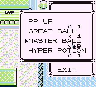

Home
Shiny Hunting
Home
Shiny Hunting
Home
Shiny Hunting
Home
Shiny Hunting
← Back to Red/Blue Guides
To perform the Item Duplication Glitch, you need:
Remember how we encountered a glitch Pokémon back in the Old Man Glitch demonstration?

If we run from this encounter and then check our bag, we'll find something interesting:
We have 129 Master Balls, an item quantity that is normally impossible, so the game is not programmed to display it properly.
The glitch Pokémon we encountered is our new friend,  . It is very similar to MissingNo., but its name is garbage data. For our purposes, it doesn't matter which one we encounter. We just have to encounter a Pokémon with a Pokédex number of 0, which and all forms of MissingNo. have.
. It is very similar to MissingNo., but its name is garbage data. For our purposes, it doesn't matter which one we encounter. We just have to encounter a Pokémon with a Pokédex number of 0, which and all forms of MissingNo. have.
No matter what name you pick, you are guaranteed to have MissingNo. or in your encounter table. This makes the Old Man Glitch the ideal way to trigger the Item Duplication glitch.
Every Pokémon has a Pokédex entry and a SEEN and CAUGHT flag. When you encounter a Pokémon, its SEEN flag is activated, and when you catch it, its CAUGHT flag is activated. The 0th Pokémon in the Pokédex also has such flags, but the SEEN flag for the 0th Pokémon happens to be located in the memory segment corresponding to your bag, particularly at the most significant bit of your sixth item's quantity.
The quantity of the Master Ball prior to the encounter was 1, or in binary representation:
Each bit has the quantity it represents written above it. To get the item quantity in decimal, take the sum of all the quantities above all the 1's.
After encountering , this is the quantity of the Master Ball:
This is the binary representation of the number 129.
This glitch can be performed for any item. You just have to use the SELECT button to move it to the 6th slot, and make sure its item count is less than 128.